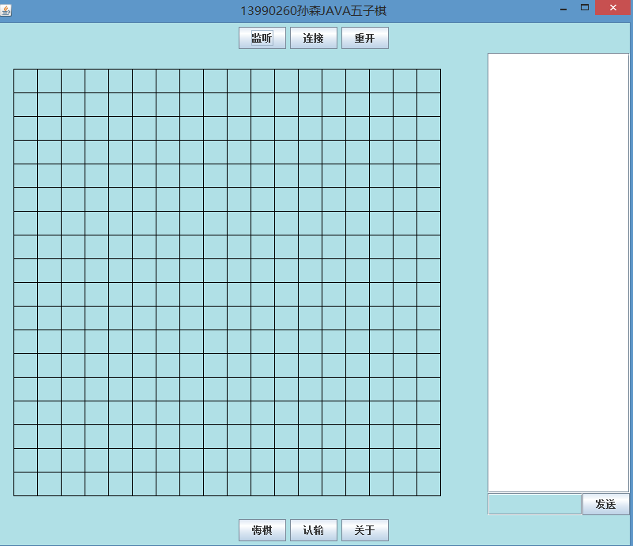

-
- Basic info. 基本信息
- 个人信息: 孙森/ 男 / 21岁
- 学习经历: 南开大学滨海学院 2013.09-2017.06
- 荣获奖项: "蓝桥杯大赛"省级三等奖，"多媒体大赛"优秀奖，"优秀学生干部"
- 常用ID: 逍遥纵然,wdss123
- Blog: www.wdss123.cn
- GitHub: www.github.com/qweewq123
-
- Experience. 项目与工作经验
天津千禧科技（2016.05 - 2016.08）
-
车牌识别项目(jsp)
采用Java web技术，使得每当汽车通过便实时获得该车牌信息，分析判断是否有违法行为.
使用 Axis2框架，客户开放接口，我们实现webservice→web server→websocket→browser的实现
个人项目
-
ss_blog（2015.06） 源代码
运用 Node.JS、Express、MongoDB、Bootstrap 进行博客应用开发
曾经使用该博客系统帮助爱读邦公司构建网站
-
逍遥纵然个人博客（php，新迁移）（2017.2 - 至今） Demo
Wordpress主题修改，个人极喜欢的极简风格博客
-
百度IFE前端技术学院课程（2016.04 - 2016.06） 源代码
学习百度IFE前端技术学院春季班课程，并独立完成其中的任务
-
Task 0001 源代码 Demo
灰色元素水平垂直居中，有两个四分之一圆位于其左上角和右下角（灰色高度是根据内容动态变化的)。
-
Task 0002 源代码 Demo
使用 HTML 与 CSS 实现类似 BootStrap 的响应式 12 栏网格布局，根据屏幕宽度，元素占的栏数不同。网格布局的作用在于更有效地控制元素在网页中所占比例的大小。
比如，博客中有一个留言板模块，在比较大的屏幕上，它占了右边 25% 的宽度，在手机等比较小的屏幕上，它占 100% 的宽度，出现在博客文章下方。
网格布局是一种实现这一需求的办法，它的好处是，把所有的宽度分为固定栏数（常用 12 栏），从而更高效的控制元素宽度。而这功能，我们使用 HTML 和 CSS 就能实现了。
-
Task 0003 源代码 Demo
将提供的空气质量数据数组，按照某种逻辑（比如空气质量大于60）进行过滤筛选，最后将符合条件的数据按照一定的格式要求显示在网页上
-
-
眼力达人 h5游戏（2016.06） 源代码 Demo
采用html5设计的眼力达人游戏，通俗易懂，玩法有趣益智，有计分，并添加好听的bgm.
-
个人简历（2017.01） 源代码 Demo
自己设计的个人简历(打印版本)
-
java 五子棋游戏（2015.9） 源代码
大二期间做的五子棋游戏（java），采用了MVC模型，有判断输赢，重开，悔棋，认输，聊天功能。

-
- Skill. 技能清单
Web前端
-
HTML / CSS
能够编写语义化的 HTML，模块化的 CSS，完成较复杂的布局
熟悉nodeJS的开发和使用
-
JavaScript
熟悉原生Javascript，能脱离jQuery等类库编码
能运用模块化、面向对象的方式编程
了解 jQuery AngularJS 的使用
-
其他
熟悉 Gulp 前端自动化工具
了解前端安全、性能优化方面的一些知识
后端
-
环境
熟悉 Linux 开发环境、 Linux 服务器环境搭建部署
了解 Apache web服务器，有建站经验
-
语言
了解 PHP，能够实现简单的博客，了解ci框架，会制作电子商城
了解 C，读过《C Primer Plus》，能编写MFC程序
了解 Java，能进行简单的网络编程和多线程编程
其他
-
是一个有趣的人，会踢球会乐器会游戏
喜欢沉浸在代码世界
学习能力强，可以作为一个安静的编程美男子
掌握 Vim,Git 等开发工具的使用
有数据结构研究经验,了解MongoDB ，MySQL数据库

孙森的简历
"潜心学习."
-
- Contact. 联系方式
- 邮箱: 785030589@qq.com
- 微信:785030589
- QQ: 785030589
-
- Application. 应聘岗位
- 前端工程师&&全栈工程师
-
- Tech. 技能点
JavaScriptHTMLCSSNodeJSPHPJavaJava
我是一个充满活力、对前端由衷热爱、善于发现问题的工程师。
我目前正在寻找岗位，希望借此机会为贵司献上我的一点绵薄之力，快招我到碗里来吧！